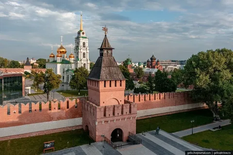
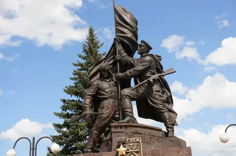

Тула — город, который стал символом мужества и стойкости в годы Великой Отечественной войны. В 1941 году Тула выдержала ожесточенную осаду немецких войск, став важным опорным пунктом на подступах к Москве. Благодаря героизму защитников города, враг не смог прорваться к столице.
Тула во время Великой Отечественной войны.
Интересные факты о Туле
- Тула была осаждена немецкими войсками с октября по декабрь 1941 года.
- Город выстоял благодаря мужеству защитников и поддержке местных жителей, которые строили укрепления и работали на заводах.
- Тульские оружейные заводы продолжали выпускать оружие для фронта даже в условиях осады.
- В 1976 году Тула получила звание "Город-герой".
- Тула — один из старейших городов России, известный своими оружейными традициями.
Памятники, посвященные героизму Тулы

Тульский кремль
Историческая крепость, которая стала символом обороны Тулы. В годы войны кремль использовался как укрепленный пункт.

Монумент защитникам Тулы
Памятник, посвященный героям, защищавшим город в 1941 году. Монумент установлен в память о мужестве и стойкости туляков.